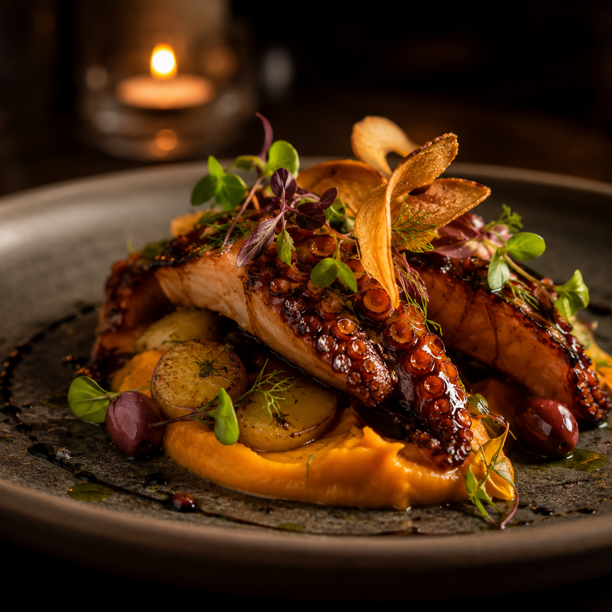
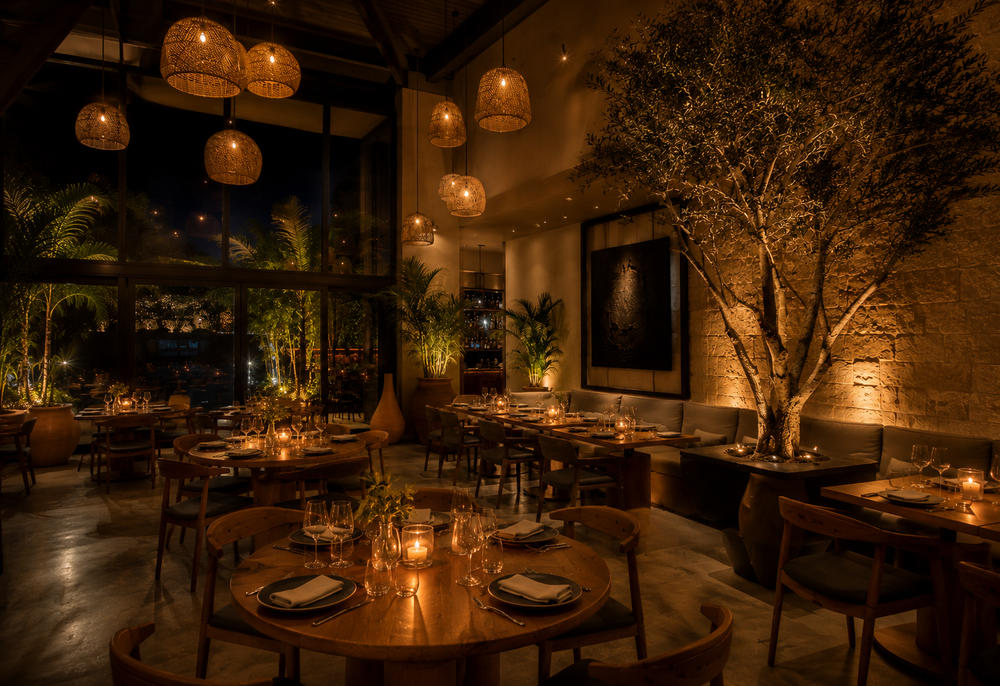
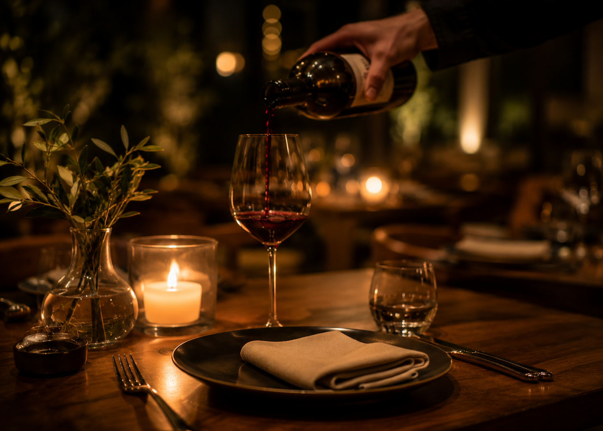

Terraza y salon
Espacios pensados para una cena intima o una mesa larga con amigos.
San Pedro Garza Garcia, Nuevo Leon
El Divino Bocado mezcla brasa, producto local y cocteleria de autor en un espacio elegante para cenas largas, celebraciones y noches que ameritan algo especial.


Espacios pensados para una cena intima o una mesa larga con amigos.
Destilados mexicanos, vinos seleccionados y una barra que acompana cada tiempo.
Reservas para celebraciones, cenas empresariales y ocasiones especiales.
Nuestra mesa
El Divino Bocado nace de la idea de reunir cocina mexicana contemporanea, servicio cercano y una puesta en escena sobria. Aqui cada detalle importa: la luz, la musica, el ritmo de la cocina y la forma en que llega cada plato a la mesa.
Es un lugar para pedir entrada, compartir una botella, alargar la conversacion y volver por ese platillo que ya se convirtio en favorito.
Conocer el ambienteExperiencia
Desde la primera copa hasta el ultimo postre, todo esta hecho para que la visita se sienta refinada, calida y facil de recomendar.
Mesas amplias, luz tenue, materiales nobles y servicio atento sin invadir.
Cocteles con mezcal, sotol, vinos mexicanos y maridajes por tiempo.
Reservas para aniversarios, celebraciones y experiencias privadas por temporada.
Galeria
Aqui van las fotos que le dan vida al sitio: interior, barra, montaje, detalles de servicio y una noche en movimiento.



Reservas
Reserva tu mesa para cena, celebracion o una noche tranquila de vinos y cocina a la lena. Para grupos grandes, experiencias privadas o eventos, nuestro equipo puede ayudarte a preparar una visita a la medida.